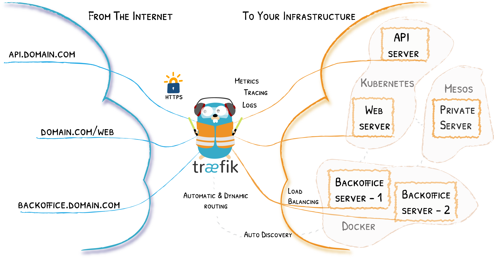

Traefik 是一个开源的可以使服务发布变得轻松有趣的边缘路由器。
下面就介绍两种在k8s中使用它的方式
IngressRoute
IngressRoute 是traefik自定义的CR，作用和k8s中的Ingress差不多，对外暴露集群内的服务。
1
2
3
4
5
6
7
8
9
10
11
12
13
14
15
16
17
18
19
20
21
22
23
24
25
26
27
28
29
30
31
32
33
|
apiVersion: traefik.containo.us/v1alpha1
kind: IngressRoute
metadata:
name: simpleingressroute
namespace: default
spec:
entryPoints:
- web
routes:
- match: Host(`your.example.com`) && PathPrefix(`/notls`)
kind: Rule
services:
- name: whoami
port: 80
---
apiVersion: traefik.containo.us/v1alpha1
kind: IngressRoute
metadata:
name: ingressroutetls
namespace: default
spec:
entryPoints:
- websecure
routes:
- match: Host(`your.example.com`) && PathPrefix(`/tls`)
kind: Rule
services:
- name: whoami
port: 80
tls:
certResolver: myresolver
|
Ingress
另外一种方式就是使用k8s原生的ingress资源，配置上和Nginx Ingress大同小异，有一些功能需要配合Annotations使用
1
2
3
4
5
6
7
8
9
10
11
12
13
14
15
16
17
18
19
20
21
22
23
24
25
26
27
28
|
apiVersion: networking.k8s.io/v1
kind: Ingress
metadata:
name: myingress
annotations:
traefik.ingress.kubernetes.io/router.tls.certresolver: letsencrypt
traefik.ingress.kubernetes.io/router.entrypoints: websecure
traefik.ingress.kubernetes.io/router.tls: true
spec:
rules:
- host: example.com
http:
paths:
- path: /bar
pathType: Exact
backend:
service:
name: whoami
port:
number: 80
- path: /foo
pathType: Exact
backend:
service:
name: whoami
port:
number: 80
|
其它的使用姿势：
后续填坑。。。
参考：
Routing Configuration for Traefik CRD - Traefik
Kubernetes Ingress Routing Configuration - Traefik